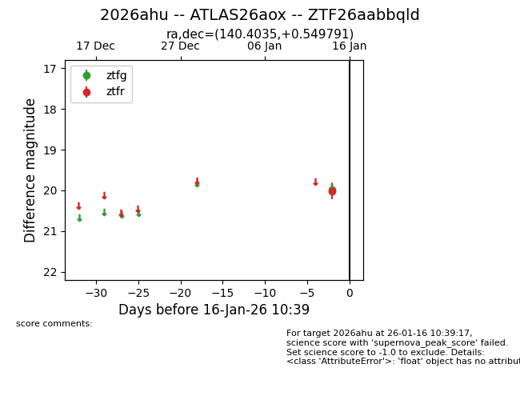
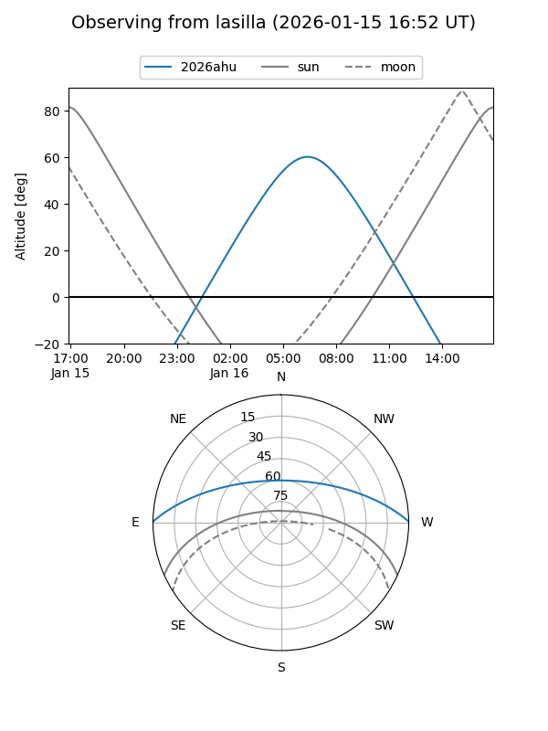
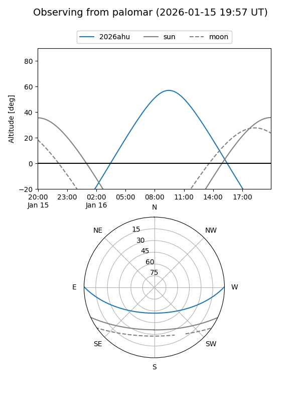
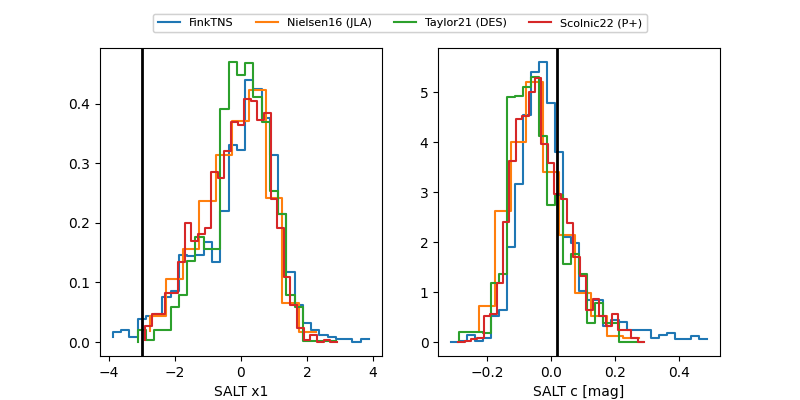

2026ahu
Target 2026ahu at 2026-01-16 10:40
Aliases and brokers:
FINK: link
Lasair: link
ALeRCE: link
TNS: link
YSE: link
alt names
ZTF26aabbqld (ztf,fink_ztf)
2026ahu (tns,yse)
ATLAS26aox (atlas)
Coordinates:
equatorial (ra, dec) = 140.4035,+0.54979
equatorial (HMS+DMS) = 09:21:36.85,+00:32:59.25
galactic (l, b) = (231.6933,+33.13980)
Flags:
Photometry:
last ztfg=19.98, ztfr=20.02
1 ztfg, 1 ztfr detections
Lightcurve

Visibility


Additional plots
